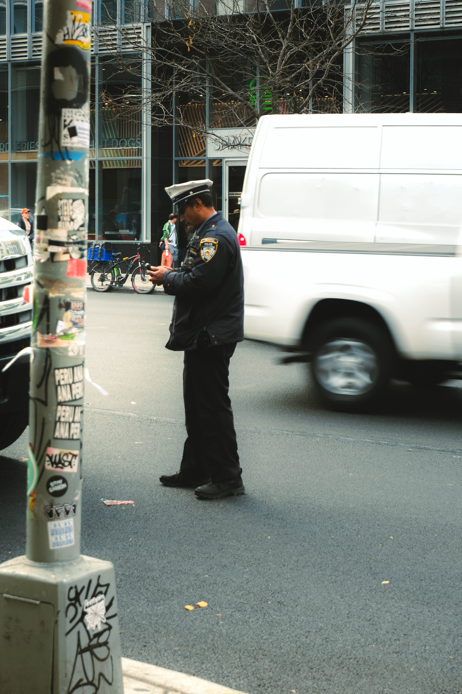
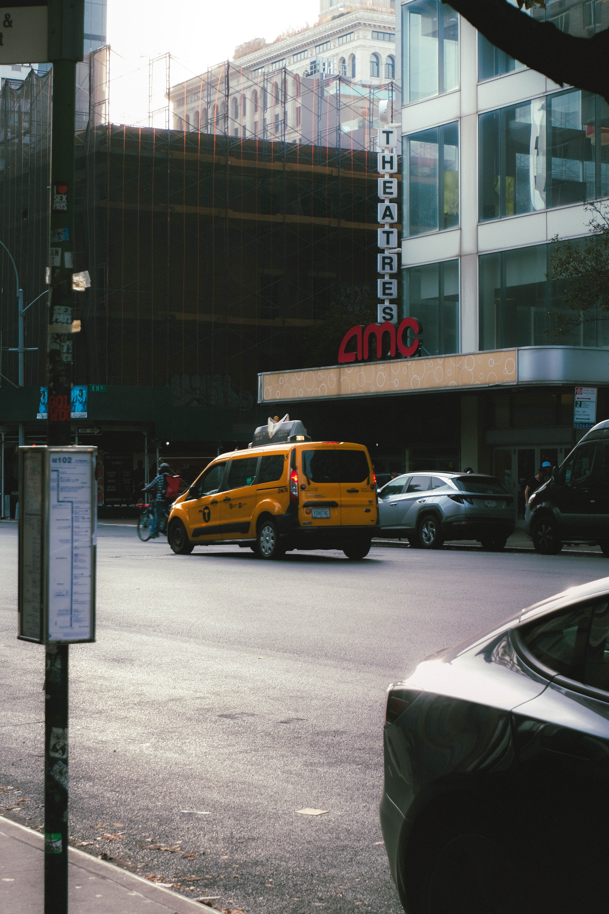

ONE DAY AS
Street Photographer
Today, I am the photographer!! Photography has always been in my interest, especially
a street photography, but because of my lack of confidence in my photographing skills, plus
my overly concern on people's privacy to take picture of them in public really were holding
me from achieving this. So, this Challenge was to learn how to stop judging myself and let go
of all the overthinking, which is hard, but..
I really mastered my not giving an F after this Challenge!
And, Here are the photos from my "one day as a street photographer"


